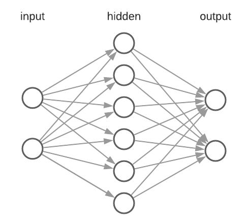

神经网络控制器 (Neural Network Controller)
引言
神经网络控制器是一类基于人工神经网络（Artificial Neural Network, ANN）的控制方法，能够通过学习从数据中提取复杂的非线性映射关系。与传统的PID或MPC控制器不同，神经网络控制器不需要精确的系统数学模型，可以直接从输入输出数据中学习控制策略。这使得神经网络控制器特别适用于难以建立精确模型的复杂非线性系统。
神经网络（Neural Networks）控制器的结构如下：

包含输入层、隐藏层及输出层。可配合遗传算法 (GA) 及强化学习 (RL) 训练、调节参数。
神经网络基础
感知器 (Perceptron)
感知器是神经网络中最基本的计算单元，也称为神经元（Neuron）。一个感知器接收多个输入信号，对每个输入乘以对应的权重（Weight），将加权和通过激活函数（Activation Function）产生输出：
其中 为输入， 为权重， 为偏置（Bias）， 为激活函数。
激活函数 (Activation Functions)
激活函数为神经网络引入非线性，使其能够近似任意复杂的函数。常用的激活函数包括：
- Sigmoid：，输出范围(0,1)，常用于二分类输出层。
- Tanh：，输出范围(-1,1)，在控制器输出需要正负值时较为适用。
- ReLU（Rectified Linear Unit）：，计算简单，是深度网络中最常用的激活函数。
- Leaky ReLU：，解决了ReLU的"死神经元"问题。
反向传播 (Backpropagation)
反向传播算法是训练神经网络的核心方法。其基本思想是：
- 前向传播（Forward Pass）：将输入数据通过网络逐层计算，得到输出预测值。
- 计算损失（Loss Computation）：将预测值与目标值进行比较，计算损失函数值（如均方误差MSE）。
- 反向传播梯度（Backward Pass）：利用链式法则（Chain Rule）从输出层到输入层逐层计算损失对每个权重的梯度。
- 更新权重（Weight Update）：使用梯度下降法（Gradient Descent）或其变体（如Adam优化器）更新权重和偏置。
其中 为学习率（Learning Rate）， 为损失函数。
用于控制的网络架构
前馈神经网络 (Feedforward Neural Network)
前馈神经网络（也称多层感知器，Multi-Layer Perceptron, MLP）是最基本的网络结构。数据从输入层经过一个或多个隐藏层流向输出层，不存在反馈连接。在控制应用中，前馈网络常用于：
- 逆动力学建模：学习从期望运动到所需控制力/力矩的映射。
- 静态非线性补偿：补偿摩擦、死区等非线性特性。
- 函数逼近：作为传统控制器中非线性部分的通用逼近器。
根据通用逼近定理（Universal Approximation Theorem），一个具有足够多隐藏神经元的单隐藏层前馈网络，可以以任意精度逼近任意连续函数。
循环神经网络 (Recurrent Neural Network, RNN)
循环神经网络具有时间反馈连接，能够处理序列数据并保持内部状态记忆。在控制应用中，RNN适用于：
- 动态系统辨识：学习具有时间依赖关系的系统动力学模型。
- 时间序列预测：预测系统未来状态，用于预测控制。
- 自适应控制：通过持续学习适应系统参数的变化。
RNN的常见变体包括：
- LSTM（长短期记忆网络）：通过门控机制解决长期依赖问题，适合需要长时间记忆的控制任务。
- GRU（门控循环单元）：LSTM的简化版本，计算效率更高。
训练方法
监督学习 (Supervised Learning)
在监督学习中，神经网络从标注的输入-输出对中学习。在控制领域，这通常意味着从已有的控制器（如专家操作数据或传统控制器的输出）中学习控制策略。
应用场景：
- 模仿学习（Imitation Learning）：从人类示教数据中学习机器人操作技能。
- 系统辨识（System Identification）：从输入输出数据中学习系统的动态模型。
- 控制器替代（Controller Cloning）：用神经网络替代计算量大的传统控制器（如MPC），在保持近似性能的同时大幅降低在线计算量。
强化学习 (Reinforcement Learning, RL)
强化学习是训练神经网络控制器最具潜力的方法。在RL框架中，智能体（Agent）通过与环境交互，根据奖励信号学习最优控制策略，不需要预先标注的训练数据。
常用的RL算法包括：
- PPO（Proximal Policy Optimization）：稳定性好，广泛用于机器人运动控制。
- SAC（Soft Actor-Critic）：基于最大熵框架，探索能力强，适合连续动作空间。
- TD3（Twin Delayed DDPG）：改进的确定性策略梯度方法，适合机器人控制任务。
RL训练通常在仿真环境（如MuJoCo、Isaac Gym、PyBullet）中进行，训练完成后将策略网络迁移到真实机器人上（Sim-to-Real Transfer）。
机器人应用
神经网络控制器在机器人领域的主要应用包括：
- 四足/人形机器人运动控制：使用RL训练策略网络，实现在复杂地形上的稳定行走、奔跑和跳跃。
- 机械臂操控：学习抓取、放置和装配等精细操作任务。
- 自动驾驶：端到端（End-to-End）的驾驶控制，从摄像头图像直接输出方向盘角度和加速踏板。
- 无人机控制：学习高机动飞行和特技动作的控制策略。
- 柔性机器人控制：难以精确建模的柔性机构的控制。
优势与局限
相对于传统控制器的优势
- 无需精确模型：可以在模型未知或难以建立的情况下工作。
- 处理非线性：天然适合处理高度非线性的系统。
- 自适应能力：可以通过在线学习适应系统参数的变化和外部干扰。
- 处理高维输入：可以直接处理图像、点云等高维感知数据。
局限性
- 缺乏可解释性（Interpretability）：神经网络是"黑箱"模型，难以分析和验证其行为的安全性。
- 稳定性保证：与经典控制理论（如Lyapunov稳定性）不同，神经网络控制器通常缺乏严格的稳定性证明。
- 数据依赖：训练需要大量的数据或仿真交互，数据质量直接影响控制性能。
- 泛化能力：在训练分布之外的场景中，行为可能不可预测。
- 实时计算需求：复杂的网络结构可能无法满足高频控制的计算时间约束。
应用实例
以下是一个使用PyTorch实现简单神经网络控制器的概念示例，用于倒立摆（Inverted Pendulum）的平衡控制：
import torch
import torch.nn as nn
class NNController(nn.Module):
"""简单的前馈神经网络控制器"""
def __init__(self, state_dim, action_dim, hidden_dim=64):
super(NNController, self).__init__()
self.network = nn.Sequential(
nn.Linear(state_dim, hidden_dim),
nn.ReLU(),
nn.Linear(hidden_dim, hidden_dim),
nn.ReLU(),
nn.Linear(hidden_dim, action_dim),
nn.Tanh() # 输出范围 [-1, 1]
)
def forward(self, state):
return self.network(state)
# 创建控制器：4维状态输入，1维动作输出
controller = NNController(state_dim=4, action_dim=1)
# 输入状态 [位置, 速度, 角度, 角速度]
state = torch.tensor([0.1, 0.0, 0.05, -0.02])
# 获取控制输出
action = controller(state)
参考资料
- K. J. Hunt, D. Sbarbaro, R. Zbikowski, and P. J. Gawthrop, "Neural Networks for Control Systems - A Survey," Automatica, vol. 28, no. 6, pp. 1083-1112, 1992.
- S. Levine, C. Finn, T. Darrell, and P. Abbeel, "End-to-End Training of Deep Visuomotor Policies," Journal of Machine Learning Research, vol. 17, no. 39, pp. 1-40, 2016.
- T. Hwangbo et al., "Learning Agile and Dynamic Motor Skills for Legged Robots," Science Robotics, vol. 4, no. 26, 2019.
- 刘金琨, 《智能控制》, 电子工业出版社.